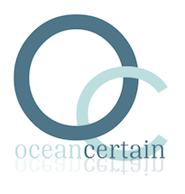

Text Mining in Marine Science
Fishing for Knowledge in an Ocean of Text
Drowning in Information
Scientific literature keeps growing
The number of scientific publications is growing at a fast rate and is estimated to double every nine years.
Reading takes time
This makes it hard for scientists, researchers and policy makers to keep up with the literature, leaving little time to read outside their own field.
Fragmentation of knowledge
We become even more specialised, publishing in our own journals, attending our own conferences and developing our own terminology. All of this hampers cross-disciplinary communication and furthers the fragmentation of knowledge.
This fragmentation is unfortunate, because an understanding of global challenges like climate change requires synthesis of knowledge across scientific disciplines.
Extracting Knowledge from text
Scientists, researchers and policy makers thus need computational tools to help them coping with the overwhelming amount of knowledge encoded in text.
Search Engines
One example of these are search engines which retrieve documents matching the keywords we provide. Search engines are a marvellous technology, but it provides only a part of the solution. Who has the time to check ten thousand hits for relevant information? Moreover, search engines often have difficulties with understanding human language - see Computers and Language.
Text Mining
Text mining aims at processing large amounts of text to reveal hidden connections and patterns. Since understanding human language is such a hard task, text mining efforts have focused on extracting predetermined types of information, ignoring everything else in the text.
For instance, we can focus on identifying all the mentions of marine species in text. From the observation that two species are frequently mentioned together in the same sentence, we may deduce that they are probably associated. In addition, targeting a specific relation between species — like A eats B — would enables us to automatically construct food chains/webs from text.
Supporting Knowledge Discovery
Knowledge Discovery
Knowledge extracted through text mining can then be combined with existing knowledge from databases as well as automatic reasoning in order to discover new knowledge. For example, a system may suggest a new hypothesis connecting two or more phenomena — extracted from different articles —through a chain of causal relations (a process also known as Literature-based Knowledge Discovery). Of course, we still need humans to check and verify such hypotheses.

Computers and Language
Computers are faced with at least two problems when processing human language.
Variability
We can say the same thing in many different ways. For example, synonyms such as “water” and “H2O” carry virtually the same meaning. Similarly, a verbal expression like “the temperature increases” can also be expressed in a nominal forms such “an increased temperature” or “in increase in temperature”. Variability, among other things, makes it hard to search with keywords.
Ambiguity
The things we say can often mean different things. Does the word “plant” refer to a living organism or to a factory? Does the phrase “more rain and less snow in the winter” mean there is more rain in the winter? We rarely have problems with ambiguity, as our knowledge of the world helps us to effortlessly find the right interpretation. In contrast, computers often struggle with many possible interpretations.
Text Mining in Ocean-Certain
Ocean-Certain is an EU FP7 research project investigating the impact of combined climatic and non-climatic stressors on the food web and the connected biological pump. The text mining efforts within the project comprise the following steps:
1. Information Retrieval
Creating a large collection of preprocessed and indexed articles in Marine science and related fields.
2. Information Extraction
Automatically extracting change events - for example, “pH level of surface water in the Arctic Ocean is rising”, “primary production has decreased”, etc. Moreover, causal relations and correlations between these change events are detected - for example, “adding iron causes phytoplankton growth”.
3. Knowledge Discovery
Combining extracted information from separate articles with background knowledge and reasoning algorithms to produce new hypotheses in the form of causal chains or feedback loops. Background knowledge comes from ontologies and linked data, as well as modelling of domain expert knowledge.
4. User Interface
Presenting this knowledge to end users as an interactive web application, which includes browsable network visualisations.
Contact
For more information regarding text mining please contact Erwin Marsi (emarsi@idi.ntnu.no) or Pinar Øzturk (pinar@idi.ntnu.no) at the Norwegian University of Science and Technology (NTNU). For questions about Ocean-Certain in general, contact Murat Van Ardalan (murat.v.ardelan@ntnu.no).
The OCEAN-CERTAIN partners are:
- NTNU- Norwegian University of Science and Technology, Norway
- UIB- University of Bergen, Norway
- GEOMAR- Helmholtz Centre for Ocean Research, Kiel, Germany
- VITO- Vlaamse Instelling voor Technologisch Onderzoek N.V. (The Flemish Institute for Technological Research), Belgium
- DEU- Dokuz Eylul University, Turkey
- UGOT- University of Gothenburg, Sweden
- GRIFFITH- Griffith University, Australia
- UACH- Austral University of Chile, Chile
- CNR-ISMAR- The National Research Council, Italy
- CEFAS- The Secretary of State for Environment, Food and Rural Affairs, UK
- TALCA- University of Talca, Chile
Text Mining in Marine Science by
Erwin Marsi is
licensed under a Creative
Commons
Attribution 4.0 International License.